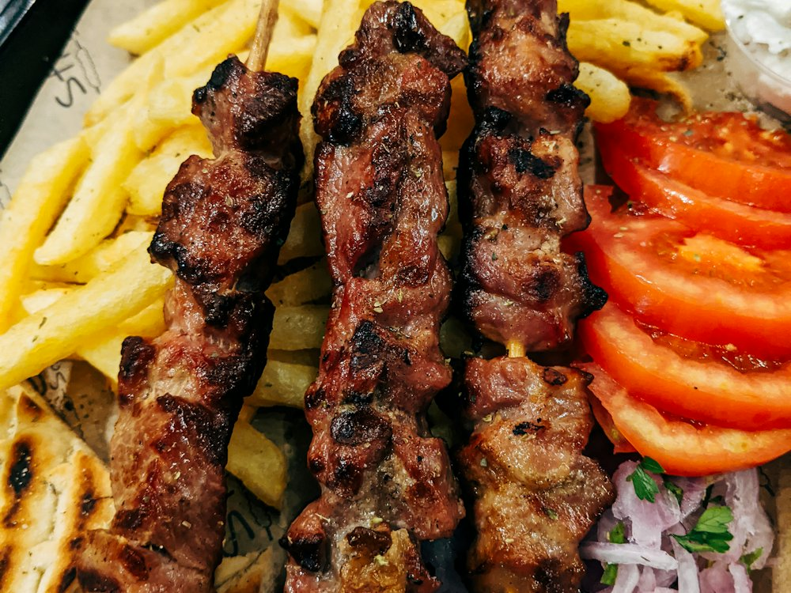

Bereket
Ресторан · Турецкая, халал · Алматы
Рейтинг 2ГИС
★ 4.8
3 101 оценок
Год открытия
нет данных
в открытых источниках не нашли
Средний чек
≈8 000 ₸
оценка по типу заведения
Адрес и часы
📍 ТЦ Life Town, мкр Самал-2, 98, Алматы · Медеуский район
🕒 часы работы уточняются — смотрите в 2ГИС
Удобства
О заведении
Турецкий халал-ресторан, работает круглосуточно.
Меню
Рядом в справочнике
Beefeater · BeerDay · Bella Ciao · Big Apple coffee shop · Bistro 130 · Blanca